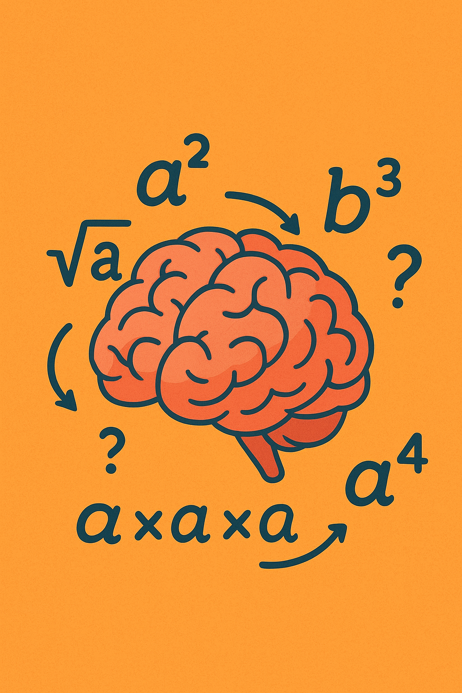

Tipo de Pensamiento que se Aborda
Pensamiento lógico-matemático:
aplicar reglas de potencias y verificar resultados.
Pensamiento flexible:
adaptarse a diferentes operaciones y dinámicas.

⬅ Volver al menú principal